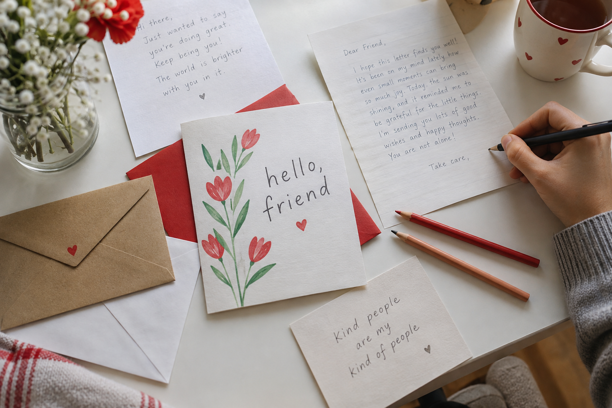

We make thoughtful cards to brighten someone’s day.
We make cards that carry a little kindness. A drawing, a thoughtful message, or a few encouraging words can brighten someone’s day.
We are young people helping others connect.
We’re From Me to You, a youth-led nonprofit bringing people together through handmade cards, pen pals, and classroom exchanges around the world.

Everyone has a story that deserves to be heard. We create opportunities for young people to reach out, learn from one another, and make someone feel seen.
Our work begins with reaching out to others.
Our three programs give people different ways to start a conversation.
We make cards that carry a little kindness. A drawing, a thoughtful message, or a few encouraging words can brighten someone’s day.
We arrange pen pal exchanges so young people can share everyday stories, discover different perspectives, and get to know someone new.
We’re working to match classrooms learning each other’s languages, giving students a chance to practice through real conversations.
Students have something to teach each other.
A language becomes more meaningful when there’s someone to share it with. Our classroom exchange pairs students by the languages they speak and the languages they’re learning.
Here is how two classrooms could connect.
Students who speak Spanish are practicing their English.We pair their classroom with students learning Spanish.Both groups exchange letters and learn from each other.Your time can help bring people together.
Bring your creativity, your curiosity, or your love of bringing people together. There’s more than one way to be part of From Me to You.
Explore our current opportunities through the Montgomery County Volunteer Center.
Find your next opportunity to volunteer with us